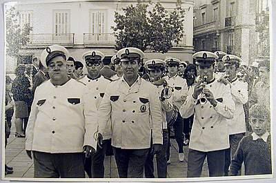

Tío Perete
 De: La Frikipedia, la enciclopedia extremadamente seria.Este señor natural de Enguídanos logró en 1963 la que hasta hoy está probada (después de múltiples estudios) como la más pésima jugada de MUS registrada en la historia de órdago y lo haya ganado.
De: La Frikipedia, la enciclopedia extremadamente seria.Este señor natural de Enguídanos logró en 1963 la que hasta hoy está probada (después de múltiples estudios) como la más pésima jugada de MUS registrada en la historia de órdago y lo haya ganado.
 El famoso Tío Perete (primero por la izquierda) en su Jura de Bandera. En la esquina inferior derecha puede verse al jovencísimo José Luís Rodriguez Zapatero.
El compañero del Tío Perete se llamaba Indalecio Rovira. El equipo oponente estaba formado por Asnaldo de la Vega y Clotilde Zapatero.
El tío Perete, ébrio de satisfación por haber ganado su primer órdago a la edad de 63 años (y que a posteriori sería el único que ganó), se mofó y befó de la pareja rival con una frase, hoy histórica, infectada de esa mezcla de mordacidad y falsa compasión propia del ganador de MUS:
"Y andaos con cuidao, que hasta el próximo siglo nuestros descendientes se la seguirán metiendo doblada a los vuestros..."
Curiosamente el tío Perete no tuvo descendencia (era estéril a causa de las radiaciones de la planta hidroeléctrica de Enguídanos), pero los otros tres contendientes estaban destinados a engendrar vástagos llamados a ocupar importantes cargos políticos a principios del siglo XXI.
Frikipedia 2005-2016, Licencia
GFDL 1.2 - Extraído por FrikiLeaks